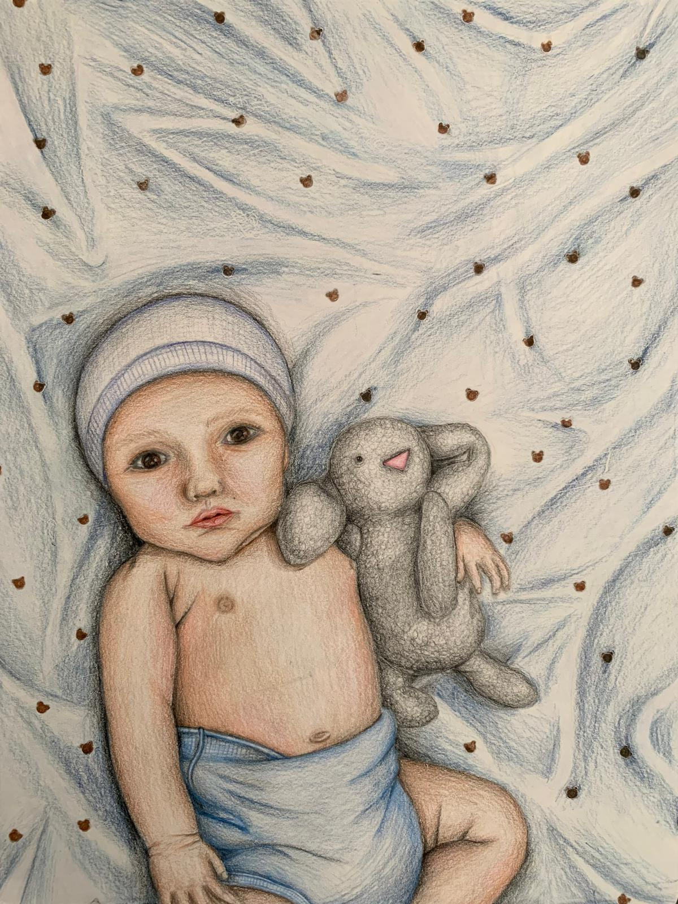
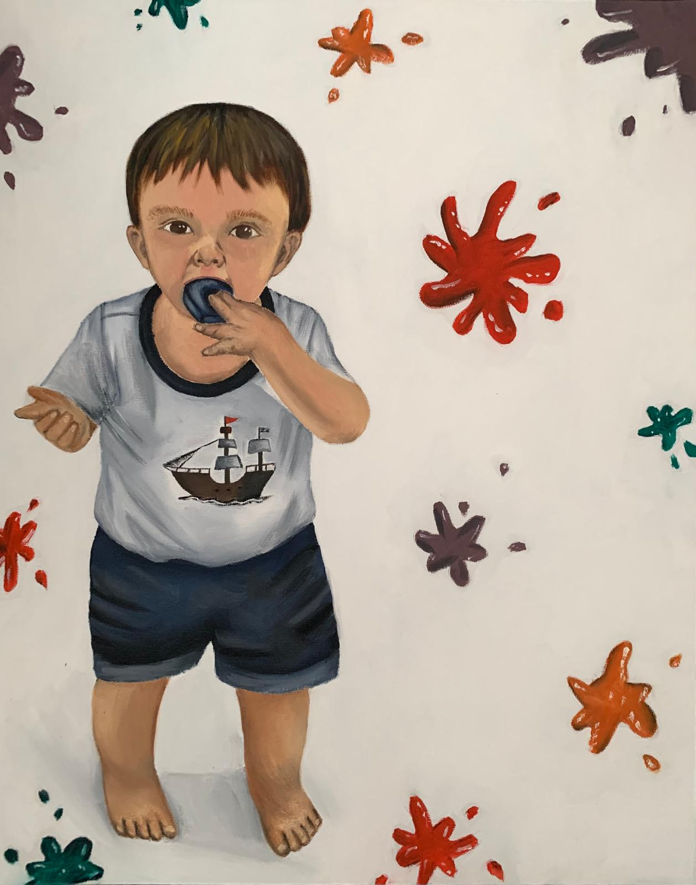
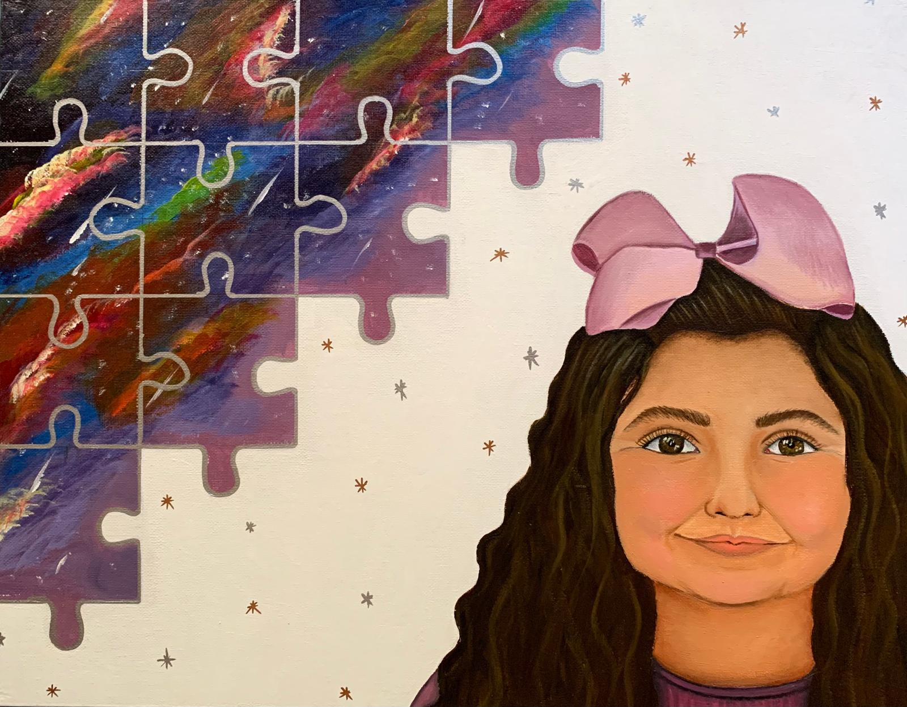
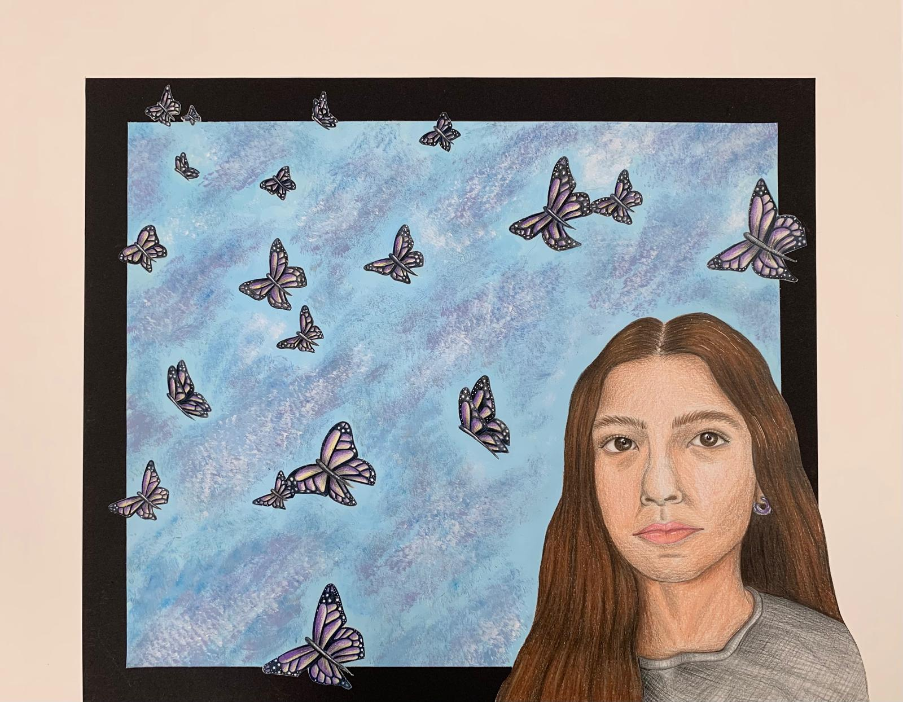
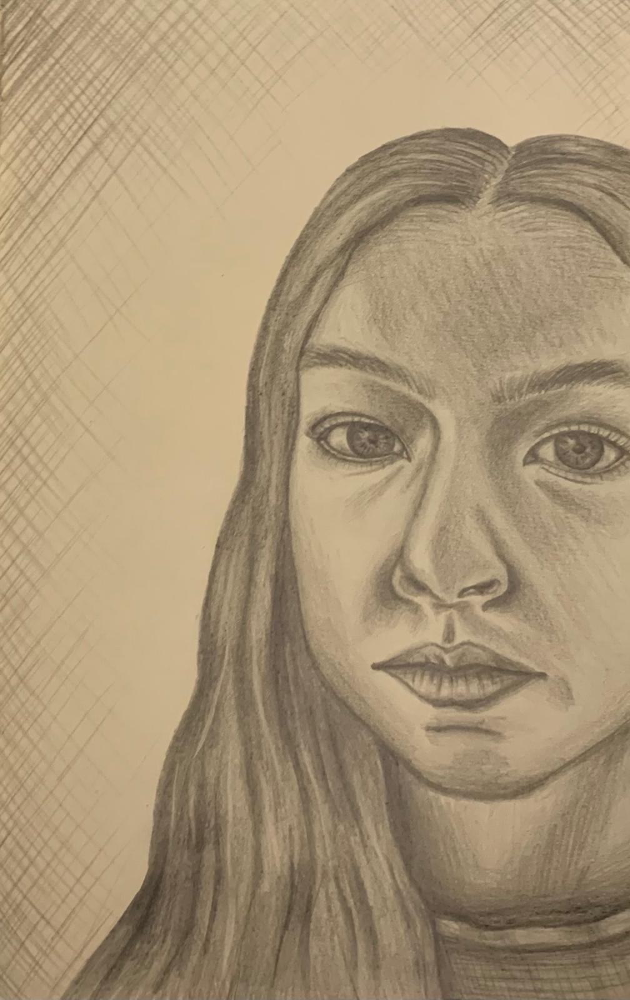

Gallery
My work

Innocence
A moment before experience begins to change how we see the world.
Childhood Moments
Small moments of childhood that stay with us as we grow.
Curiosity
The urge to look closer, ask questions, and discover something new.
First Lessons
The early experiences that begin to shape our understanding.
Becoming
A reflection on growing into a self that is still taking shape.
Adolescence
Navigating adolescence and the transformation that comes with it.
Quiet Chaos
A quiet exterior can hold a restless inner world.
Unspoken
Some feelings remain present even when words cannot express them.
Written in Memory
What we remember becomes part of how we understand ourselves.
What Grows Within
Inner growth can unfold gradually, beyond what others can see.